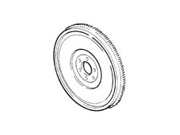
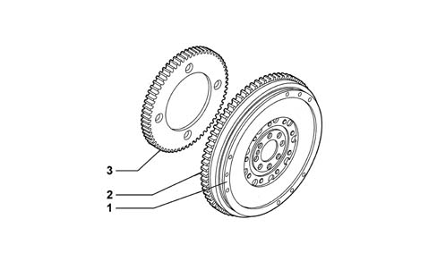

1024B engine flywheel
- Path
- Descriptions > 10 ENGINE > 1024 CRANKSHAFT AND FLYWHEEL > 1024B engine flywheel
- Kind
- system description
- Applies to
- all engines; all production periods
- Interactive page
- https://sloeber94.github.io/elrnDB-fPnd/en/#/2750882
Applies to: engines: 1.1, 1.2 8v; all production periods
In cast iron, with a press-fitted steel ring gear.
The flywheel is bolted by a flange to the crankshaft.

Applies to: engines: 1.3 JTD 16v; all production periods
The flywheel is made of cast iron with steel toothed ring.
The flywheel is secured by a flange with bolts to the crankshaft, and on the engine side there is a phonic wheel for the rpm sensor.

1 - Flywheel 2 - Toothed wheel 3 - Phonic wheel for rpm
Applies to: engines: 1.1, 1.2 8v; all production periods
OPERATION
This makes the engine turn smoothly. It accumulates energy during active stages (expansions) and returns it during passive stages.
The flywheel is designed to allow the engine to idle without stalling and overcome the friction developed by the engine during no-load operation.
Applies to: engines: 1.3 JTD 16v; all production periods
The flywheel makes the engine turn smoothly, by accumulating energy during the active stages (expansions) and returning it during passive stages.
The flywheel is designed to allow the engine to idle without stalling and overcome the friction developed by the engine during no-load operation.